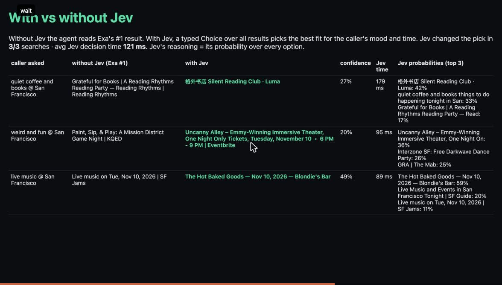

Voice agents fail silently: the caller just hangs up. CallLens shows exactly which turn of a Vapi call broke and why, judges every turn with TypeSafe Jev in ~120 ms, and self-heals the live agent in one click.
Caller → Deepgram Nova-3 (ears) → Vapi (orchestration) → tool server: Exa live search → Jev typed Choice → Deepgram Aura (voice).
CallLens pulls each call from the Vapi API, attributes latency per stage, has Jev label every turn (slow, misheard, tool issue, talked over, off track), score the whole call and detect the caller’s language, then turns findings into a live PATCH /assistant: Deepgram keyterms, a shorter endpointing wait, multilingual mode.

| Same caller, same script | Before heal | After heal |
|---|---|---|
| “Embarcadero” heard as | Aero · Arrow · Amir | Embarcadero, first try |
| Agent re-asked location | 3 times | 1 time |
| Turns to finish | 22 | 17 |
| Avg turn latency | 2731 ms | 2947 ms (not fixed) |
| Transcriber | 1530 ms | 1551 ms (next fix) |
The live patch (Deepgram keyterm + shorter endpointing wait) fixed the mishearing CallLens found. Latency is still transcriber-bound; one call each, so treat it as anecdotal.
| Vapi Composer | CallLens | |
|---|---|---|
| Root cause | Prompt re-asks location | Transcriber misheard “Embarcadero” |
| Latency | Not mentioned | Transcriber 1530 ms = bottleneck |
| Provider fix | “No change needed” | Deepgram keyterm + 0.4 s endpointing, applied live |
| Speed | ~45 s LLM agent | ~120 ms per Jev judgment |
Composer is right about the prompt; CallLens sees the speech layer. Best together.